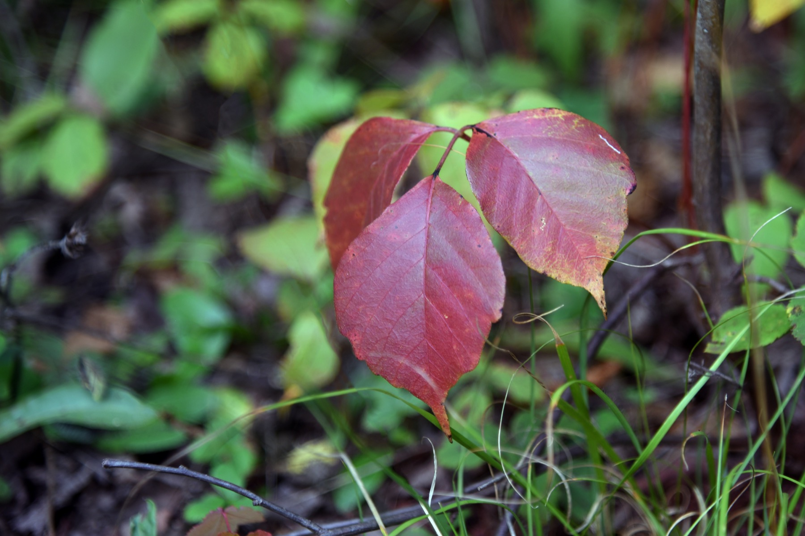

NPCWoods
NPCWoods
Poison ivy rash? Text me a photo.
Hi, I’m Chris Woods. I’m a nurse practitioner. Got an itchy rash from poison ivy, poison oak, or poison sumac? Text me a few photos. I look at them myself. Then I tell you what I think it is and what to do next.
✓ I read every text · ✓ No waiting room · ✓ No app, no video · ✓ Pay only if I can treat you
 Pulled weeds. Now I itch.
Send me a pic. I got you
Pulled weeds. Now I itch.
Send me a pic. I got you

I think I got poison ivy pulling weeds. It’s spreading and it itches like crazy.
Sorry, that’s miserable. Send me a few clear photos and tell me when it started. I’ll look at it myself.
One flat fee for a plant rash text visit: $59. If you need something from the pharmacy, you pay the pharmacy for it.
What causes the rash?
Poison ivy, poison oak, and poison sumac all have the same oil. It’s called urushiol (you-ROO-shee-all).
When it touches your skin, most people get a red, itchy rash. It often makes blisters too.
The oil soaks into your skin fast. That’s why washing right away helps so much.
The rash itself may not show up for a while. If you’ve had it before, it can show up in a few hours to a few days.
The first time you ever get it, it can take up to 2 or 3 weeks. So it can be hard to know where you got it.
How to spot them.
You don’t have to be a plant expert. These simple tips help.

Four things people get wrong.
I hear these a lot. Here’s the truth.
How the rash usually goes.
Every rash is a little different. This is a common pattern.
It can look like it’s spreading. Most of the time, it’s just new spots showing up where there was less oil.
The itch starts
Your skin itches where the oil touched. Then red patches, lines, or bumps show up.
Blisters may form
Small or big blisters can fill with clear fluid and leak. The itch can be bad enough to wake you up at night.
It crusts over
The blisters dry up and crust. The itch slowly calms down.
It fades
For many people the rash clears on its own in 1 to 3 weeks. The first time you get it, it can last longer.
What you can do at home.
A small, mild rash can often be handled at home. Only do this if you’re sure it’s from one of these plants.
- Wash your skin gently with soap and water as soon as you can. Rinse well with cool water. Clean under your nails.
- Put on gloves. Wash your clothes, shoes, tools, and your pet.
- Lay a cool, wet washcloth on the itchy spots.
- Take short, cool showers, or a short bath with oatmeal or baking soda in it.
- Leave blisters alone. If one opens, keep the skin on top. It protects the spot underneath.
- The rash is in more than one or two spots.
- The itch is hard to live with.
- Home care isn’t helping after a few days.
- You’re not sure it’s poison ivy. Lots of rashes look alike.
- It’s your first time getting a plant rash.
How a text visit with me works.
No app. No video call. No waiting room.
You text from your phone, and I read it myself.
Text me
Text (480) 639-4722. Tell me what happened and when the rash started.
Send clear photos
Use good light. Send one close up and one from a little farther back. Tell me what you’ve tried.
I look at your case
I read your story and look at your photos. I may ask a few questions.
You get a plan
I tell you what I think it is and what to do next. If you need something from the pharmacy, I send it to the one you pick. If I can’t safely help by text, I tell you where to go, and you don’t pay.
When to skip a text visit.
A text visit is not for emergencies. If any of these are true, get care in person now. Don’t wait on a text.
How to avoid the next one.
A few habits go a long way, in the yard or on the trail.
Poison ivy questions I get a lot.
Can you help with poison ivy by text?
Often, yes. A plant rash is easy to see in a clear photo. I look at your photos and your story myself. If I think you need to be seen in person, I tell you, and you don’t pay.
How much does it cost?
$59 flat for the visit. If you need something from the pharmacy, you pay the pharmacy for that.
Is poison ivy contagious?
No. You can’t get it from another person’s rash or from blister fluid. You only get it from the plant oil. That oil can be on clothes, tools, or a pet, so wash those.
How long does a poison ivy rash last?
For many people, 1 to 3 weeks. If it’s your first time, it can last longer.
Do you help with poison oak and poison sumac too?
Yes. All three plants have the same oil and cause the same kind of rash. It’s the same $59 text visit.
Where can I use NPCWoods?
I’m licensed in 13 states, including Florida by telehealth registration. You need to be in one of those states when you text. You can see the full list on my credentials page.

Hi, I’m Chris. I read every text myself.
I’m Chris Woods, MSN, APRN, FNP-C, AGACNP-BC. I’m a nurse practitioner with two board certifications.
I’m not a chatbot. When you text NPCWoods, you get me.
I wrote and reviewed this page. Last reviewed . About me · My credentials
Itchy plant rash? Text me.
$59 flat for the visit. You only pay if I can treat you. A text visit is not for emergencies. If you have trouble breathing, call 911.
Text (480) 639-4722Sources
- American Academy of Dermatology: Poison ivy, oak, and sumac
- What does the rash look like?
- How to treat the rash
- What to do if you touch a plant
- U.S. FDA: Outsmarting poison ivy
This page is for learning. It does not replace care from a clinician who can see you. If you have an emergency, call 911.
Photo: poison ivy by U.S. Fish & Wildlife Service Midwest Region, public domain via Wikimedia Commons.